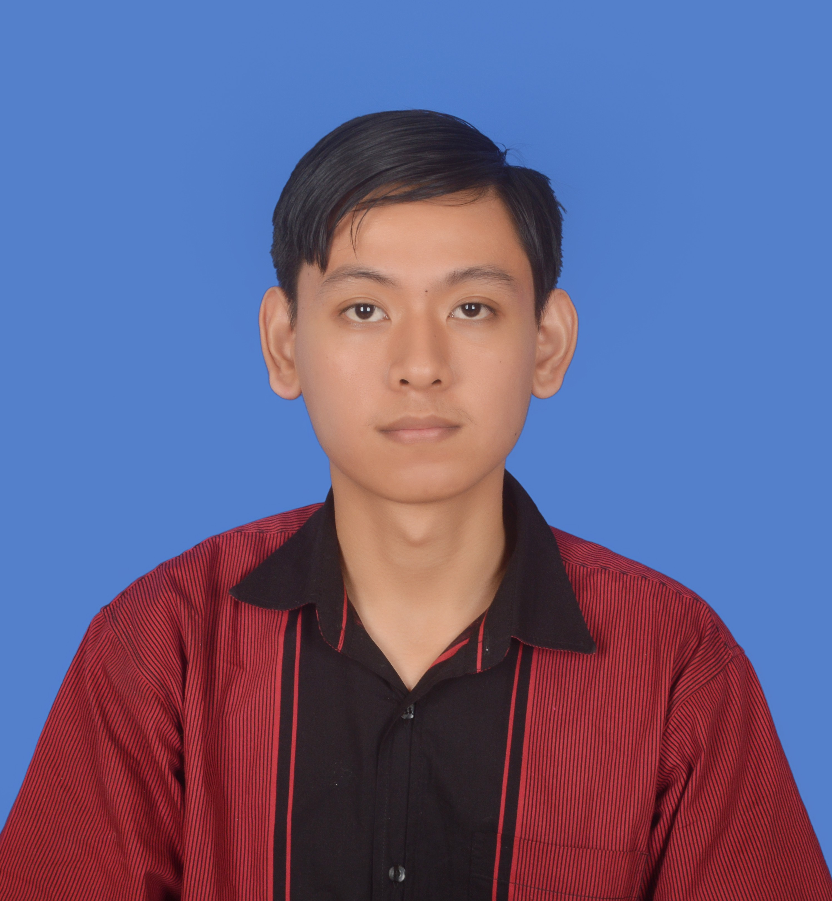

<!DOCTYPE html>
<html lang="en">
<head>
    <meta charset="UTF-8">
    <meta name="viewport" content="width=device-width, initial-scale=1.0">
    <title>My Resume</title>
</head>
<body>
    
    <h1>Name: Aiman Hamizan Bin Wisma</h1>
    <h2><u>Summary</u></h2>
    <p style="text-align: justify;"> As a recent graduate with a specialization in computer networking from Universiti Teknologi Brunei, I bring a valuable blend of education and practical experience to the table. During my
        enriching semester-long internship at the STEP Centre, I had the
        privilege of leading the STEAM For Future program. My selfmotivation and genuine passion for the field drive me to embrace
        challenges and turn them into growth opportunities.
    </p>
    <hr/>

    <h2>Employment History</h2>
    <ul>
        <li><h3>STEP Centre internship (January 2022 - June 2022)</h3></li>
        <ul>
            <li><b>Trainer - STEAM For Future Program</b></li>
            <ul>
                <li>Conducted training workshop for students ranging
                    from primary school to secondary school on basic
                    programming through Scratch and MIT App Inventor.
                    </li>
            </ul>
            <li><b>Trainer - STEAM For Future Program</b></li>
            <ul>
                <li>Assisted the lead trainer during workshop training
                    sessions.</li>
            </ul>
            <li><b>Trainer - Green School Initiative Program</b></li>
            <ul>
                <li>Provided support in presenting PowerPoint
                    Presentation.</li>
            </ul>
        </ul>
        <li><h3>Ministry of Education internship (January 2018 - July 2018)</h3></li>
        <ul>
            <li>Administrative Assistant</li>
            <ul>
                <li>Updated records and maintained documents using
                    Microsoft Word.</li>
            </ul>
            <li>General Office Clerk</li>
            <ul>
                <li>Performed various general office clerk duties and ran
                    errands</li>
            </ul>
        </ul>
    </ul>

    <hr/>

    <h2>Education</h2>
    <ul>
        <li><b>Universiti Teknologi Brunei (June 2019 - June 2023)</b></li>
        <p>Bachelor of Science (Hons) in Computer Networking</p>

        <li><b>Politeknik Brunei (January 2015 - August 2018)</b></li>
        <p>Level-5 Diploma in Computer Network and Security</p>
    </ul>
    <hr/>

    <h2>Skills</h2>
    <ul>
        <li>Microsoft Office</li> 
        <li>Github</li>
        <li>Programming Java</li>
        <li>Web Development</li>
        <li>Cisco Packet Tracer</li>
        <li>Microsoft 365 Fundamentals</li>
        <li>Microsoft Security,Compliance, and Identity Fundamentals</li>    
    </ul>

    <hr/>

    <h2>References</h2>
    <p><b>DR. RAVI KUMAR PATCHMUTHU</b></p>
    <p>ASSISTANT PROFESSOR, UNIVERSITI TEKNOLOGI BRUNEI</p>
    <ul>
        <li>Phone: +673 8171484 </li>
        <li>Email : ravi.patchmuthu@utb.edu.bn</li>
    </ul>

    <hr/>

    <a href="./public/contact.html">Contact</a>

    <footer>
        <p>@ 2024 Aiman Wisma</p>
    </footer>

</body>
</html>